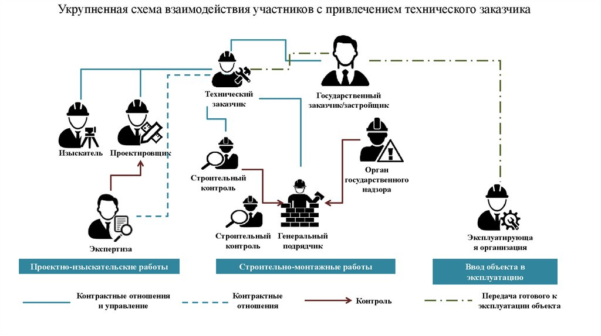

Как взаимодействуют участники строительства

ПТО – неотъемлемый элемент строительства. Теперь познакомим вас со всеми стадиями строительного процесса.
В этом уроке эксперт Школы на схеме покажет, как взаимодействуют участники строительства, научит ориентироваться в их функциях, а также разъяснит порядок действий, который нужно соблюдать при строительстве, чтобы получить разрешение на ввод объекта в эксплуатацию.
Из каких этапов состоит строительный проект
Предположим, мы хотим построить, общественное здание. Оно станет недвижимостью, когда зарегистрируют его права. Пока это объект капитального строительства.
Теперь рассмотрим перечень мероприятий строительного проекта. Проект здесь не означает проектная документация. Все мероприятия организации проводят для того, чтобы построить и ввести объект в эксплуатацию. Перечень мероприятий установили в статье 5.2 ГрК РФ.
Материал к уроку (PDF)
Порядок действий при строительстве:
PDF получен с исходной страницы. Поля для названия организации и других персональных данных оставлены пустыми.
Обратите внимание, что перечень мероприятий могут менять в зависимости от вида и назначения объекта.
Для некапитальных строений большая часть мероприятий не понадобится. Например, не нужно получать разрешения или регистрировать права.
Участники строительства
Давайте изучим основные понятия и проясним роли специалистов в строительстве.
Участники строительства (СП 48.13330.2019) – физические и юридические лица, индивидуальные предприниматели, которые участвуют в строительном проекте:
- застройщик,
- технический заказчик,
- генеральная подрядная организация,
- подрядные организации,
- эксплуатирующие организации,
- органы государственного строительного надзора.
Это не исчерпывающий список, могут быть и другие участники. Например, проектные организации.
Каждый участник выполняет свои функции.
Государственный заказчик (п.5 ч.1 ст.3 Федерального закона от 05.04.2013 N 44-ФЗ) – государственный орган, действующий от имени РФ или субъекта РФ, уполномоченный принимать бюджетные обязательства.
Разновидности государственных заказчиков:
- госорган, в том числе орган госвласти
- орган управления внебюджетным фондом
- казенное учреждение, бюджетное учреждение
- корпорация «Росатом»
- корпорация «Роскосмос»
Часто госзаказчик выступает в роли инвестора и передает свои функции застройщику. Теперь давайте более подробно ознакомимся с участниками строительства.
Материал к уроку (PDF)
Основные определения участников строительства
PDF получен с исходной страницы. Поля для названия организации и других персональных данных оставлены пустыми.
Рассмотрите схему примера взаимодействия между участниками строительства с участием госзаказчика.

Госзаказчик в лице застройщика заключает договор и передает свои функции техническому заказчику. Технический заказчик от своего имени заключает договор с изыскателем, проектировщиком и генподрядчиком. Генподрядчик также может привлечь субподрядчиков, чтобы выполнить виды работ. Он будет выступать в роли заказчика. Организации обязаны выполнить и сдать объем работ по договору.
Если у техзаказчика нет возможности провести строительный контроль, он может заключить договор на строительный контроль с другой организацией, которая не является генподрядчиком. Представитель этой организации станет представителем техзаказчика по вопросам строительного контроля. Кроме того, техзаказчик может заключить договор с организацией, которая будет проводить экспертизу ПД. Процесс и результат строительно-монтажных работ генподрядчика проходят обязательный строительный контроль, как со стороны генподрядчика, так и со стороны заказчика.
Органы ГСН также контролируют строительство по программе проверок, которую формируют после извещения о начале строительства.
Когда строительство завершают, объект нужно ввести в эксплуатацию. Порядок действий такой:
- Заказчик принимает объект у генподрядчика.
- Заказчик получает ЗОС от органов ГСН, собирает комплект документов для ввода объекта в эксплуатацию и получает разрешение.
- Объект ставят на кадастровый учет.
Самое важное
Общественное здание становится недвижимостью, когда его права зарегистрированы.
Чтобы построить и ввести объект в эксплуатацию, воспользуйтесь перечнем мероприятий строительного проекта. Его положения опубликованы в статье 5.2 ГрК РФ.